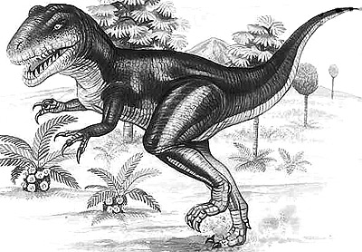
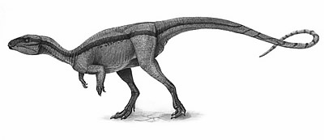

Abelisaurus
Taxonomic details
Taxonomy:
Dinosauria, Saurischia, Theropoda, Neotheropoda, Ceratosauria,
Neoceratosauria, Abelisauridae,
Abelisaurinae
Named by:Bonaparte and Novas (1985)
Bonaparte and Novas (1985)
Type species:
comahuensis
অ্যাবেলিসরাস
শ্রেণীবিন্যাস বিবরণ,
শ্রেণীবিন্যাস:ডাইনোসোরিয়া, সরিসচিয়া, থেরোপোডা, নিওথেরোপোডা,
সেরাটোসোরিয়া, Neoceratosauria,
Abelisauridae,
Abelisaurinas
নামকরণ করেছেন:বোনাপার্ট এবং নোভাস (1985)
বোনাপার্ট এবং নোভাস (1985) প্রকার প্রজাতি: comahuensis

Achillobator
Taxonomic details Taxonomy: Dinosauria, Saurischia, Theropoda, Neotheropoda, Tetanurae, Avetheropoda, Coelurosauria, Tyrannoraptora, Maniraptoriformes, Maniraptora, Paraves, Eumaniraptora, Dromaeosauridae Named by: Perle, Norell and Clark (1999) Type species: giganteus
অ্যাচিলোবেটর
শ্রেণীবিন্যাস বিবরণ শ্রেণীবিন্যাস:
ডাইনোসোরিয়া, সরিসচিয়া, থেরোপোডা, নিওথেরোপোডা, টেটানুরা,
অ্যাভেথেরোপোডা,
কোয়েলুরোসাউরিয়া, টাইরানোরাপ্টোরা, Maniraptoriformes, Maniraptora, Paraves, Eumaniraptora,
Dromaeosauridae
নামকরণ
করেছেন: পার্লে, নরেল এবং ক্লার্ক (1999) প্রকার প্রজাতি: giganteus
Acrocanthosaurus
Taxonomic details Taxonomy: Dinosauria, Saurischia, Theropoda, Neotheropoda, Tetanurae, Avetheropoda, Carnosauria, Allosauroidea, Carcharodontosauridae Named by: Stovall and Langston (1950) Type species: atokensis
অ্যাক্রোক্যান্থোসরাস
শ্রেণীবিন্যাস বিবরণ শ্রেণীবিন্যাস: ডাইনোসোরিয়া, সৌরিসচিয়া,
থেরোপোডা, নিওথেরোপোডা, টেটানুরা,
অ্যাভেথেরোপোডা,
কার্নোসাউরিয়া, অ্যালোসরোইডিয়া, Carcharodontosauridae
নামকরণ করেছেন: স্টোভাল এবং ল্যাংস্টন (1950)
প্রকার প্রজাতি:
অ্যাটোকেনসিস

Aegyptosaurus
Taxonomic details Taxonomy: Dinosauria, Saurischia, Sauropodomorpha, Sauropoda, Eusauropoda, Neosauropoda, Macronaria, Camarasauromorpha, Titanosauriformes, Titanosauria Named by: Stromer (1932) Type species: baharijensis
ইজিপ্টোসরাস
শ্রেণীবিন্যাস বিবরণ শ্রেণীবিন্যাস: ডাইনোসোরিয়া, সৌরিসচিয়া, সৌরোপোডোমর্ফা, সৌরোপোডা, ইউসাউরোপোডা, নিওসরোপডা, ম্যাক্রোনারিয়া, ক্যামারাসোরোমর্ফা, টাইটানোসরিফর্মস, টাইটানোসোরিয়া নামকরণ করেছেন: স্ট্রোমার (1932) প্রকার প্রজাতি: বাহারিজেনসিস

Afrovenator
Taxonomic details Taxonomy: Dinosauria, Saurischia, Theropoda, Neotheropoda, Tetanurae, Spinosauroidea, Megalosauridae, Eustreptospondylinae Named by: Sereno, Wilson, Larsson, Dutheil and Sues (1944) Type species: abakensis
আফ্রভেন্তর
শ্রেণীবিন্যাস বিবরণ শ্রেণীবিন্যাস: ডাইনোসোরিয়া, সরিসচিয়া, থেরোপোডা, নিওথেরোপোডা, টেটানুরা, স্পিনোসরোইডিয়া, মেগালোসরিডি, ইউস্ট্রেপ্টোস্পন্ডিলিনা নামকরণ করেছেন: সেরেনো, উইলসন, লারসন, ডুথিল এবং স্যুস (1944) প্রকার প্রজাতি: abakensis
Agilisaurus
Taxonomic details Taxonomy: Dinosauria, Ornithischia, Neornithischia, Cerapoda, Ornithopoda, Euornithopoda Named by: Peng (1990) Type species: louderbacki
এগিলিসরাস
শ্রেণীবিন্যাস বিবরণ শ্রেণীবিন্যাস: ডাইনোসোরিয়া, অর্নিথিসিয়া, নিওর্নিথিসিয়া, সেরাপোডা, অর্নিথোপোডা, ইউরনিথোপোডা নামকরণ করেছেন: পেং (1990) প্রকার প্রজাতি: louderbacki
Alamosaurus
ype of dinosaur: sauropod Length: 21.0m
Taxonomic details Taxonomy: Dinosauria, Saurischia, Sauropodomorpha, Sauropoda, Eusauropoda, Neosauropoda, Macronaria, Camarasauromorpha, Titanosauriformes, Titanosauria, Lithostrotia Named by: Gilmore (1922) Type species: sanjuanensis
আলামোসরাস
শ্রেণীবিন্যাস বিবরণ শ্রেণীবিন্যাস: ডাইনোসোরিয়া, সৌরিসচিয়া, সৌরোপোডোমর্ফা, সৌরোপোডা, ইউসাউরোপোডা, নিওসরোপডা, ম্যাক্রোনারিয়া, ক্যামারাসোরোমর্ফা, টাইটানোসরিফর্মস, টাইটানোসোরিয়া, লিথোস্ট্রোটিয়া নামকরণ করেছেন: গিলমোর (1922) প্রকার প্রজাতি: sanjuanensis
Albertaceratops
Type of dinosaur: ceratopsian Length: 7.0m Diet: herbivorous herbivorous food icon When it lived: Late Cretaceous, 80-75 million years ago Found in: Canada, USA This dinosaur is known from a single, well-preserved skull from Alberta and material from a bone bed in Montana, including almost the entire skeleton, found in August 2001. It has long brow horns, unlike other members of the centrosaurine subfamily. Taxonomic details Taxonomy: Dinosauria, Ornithischia Named by: Ryan 2007 Type species: nesmoi
আলবার্টাসেরেটপস
ডাইনোসরের প্রকার: সেরাটোপসিয়ান দৈর্ঘ্য: 7.0 মি ডায়েট: তৃণভোজী তৃণভোজী খাদ্য আইকন যখন এটি বাস করত: লেট ক্রিটেসিয়াস, 80-75 মিলিয়ন বছর আগে পাওয়া: কানাডা, মার্কিন যুক্তরাষ্ট্র এই ডাইনোসর আলবার্টা থেকে একটি একক, ভালভাবে সংরক্ষিত মাথার খুলি এবং মন্টানার একটি হাড়ের বিছানার উপাদান থেকে পরিচিত, 2001 সালের আগস্টে পাওয়া প্রায় পুরো কঙ্কাল সহ। এর অন্যান্য সদস্যদের থেকে ভিন্ন ভ্রু শিং রয়েছে সেন্ট্রোসোরাইন সাবফ্যামিলি। শ্রেণীবিন্যাস বিবরণ শ্রেণীবিন্যাস: ডাইনোসোরিয়া, অর্নিথিসিয়া নামকরণ করেছেন: রায়ান 2007 প্রকার প্রজাতি: nesmoi

Albertosaurus
Type of dinosaur: large theropod Length: 9.0m Weight: 1500kg Diet: carnivorous carnivorous food icon Teeth: saw-edged, flesh-slicing teeth Food: probably plant-eating dinosaurs How it moved: on 2 legs When it lived: Late Cretaceous, 76-74 million years ago Found in: Canada Albertosaurus was a close relative of Tyrannosaurus, but smaller and not as heavily built. Taxonomic details Taxonomy: Dinosauria, Saurischia, Theropoda, Neotheropoda, Tetanurae, Avetheropoda, Coelurosauria, Tyrannoraptora, Tyrannosauroidea, Tyrannosauridae, Albertosaurinae Named by: Lamb (1914) Type species: libratus
আলবার্টোসরাস
ডাইনোসরের প্রকার: বড় থেরোপড দৈর্ঘ্য: 9.0 মি ওজন: 1500 কেজি ডায়েট: মাংসাশী মাংসাশী খাদ্য আইকন দাঁত: করাত-ধারযুক্ত, মাংস কাটা দাঁত খাদ্য: সম্ভবত উদ্ভিদ খাওয়া ডাইনোসর কিভাবে এটি সরানো হয়েছে: 2 পায়ে যখন এটি বাস করত: প্রয়াত ক্রিটেসিয়াস, 76-74 মিলিয়ন বছর আগে পাওয়া: কানাডা আলবার্টোসোরাস টাইরানোসরাসের নিকটাত্মীয় ছিলেন, তবে ছোট এবং ভারীভাবে নির্মিত নয়। শ্রেণীবিন্যাস বিবরণ শ্রেণীবিন্যাস: ডাইনোসোরিয়া, সরিসচিয়া, থেরোপোডা, নিওথেরোপোডা, টেটানুরা, অ্যাভেথেরোপোডা, কোয়েলুরোসাউরিয়া, টাইরানোরাপ্টোরা, Tyrannosauroidea, Tyrannosauridae, Albertosaurinae নামকরণ করেছেন: মেষশাবক (1914) প্রকার প্রজাতি: libratus
.jpg)
Alectrosaurus
Type of dinosaur: large theropod Length: 5.0m Diet: carnivorous carnivorous food icon When it lived: Late Cretaceous, 90-70 million years ago Found in: China, Mongolia Taxonomic details Taxonomy: Dinosauria, Saurischia, Theropoda, Neotheropoda, Tetanurae, Avetheropoda, Coelurosauria, Tyrannoraptora, Tyrannosauroidea Named by: Gilmore (1933) Type species: olseni
ইলেকট্রোসরাস
ডাইনোসরের প্রকার: বড় থেরোপড দৈর্ঘ্য: 5.0 মি ডায়েট: মাংসাশী মাংসাশী খাদ্য আইকন যখন এটি বাস করত: লেট ক্রিটেসিয়াস, 90-70 মিলিয়ন বছর আগে পাওয়া: চীন, মঙ্গোলিয়া শ্রেণীবিন্যাস বিবরণ শ্রেণীবিন্যাস: ডাইনোসোরিয়া, সরিসচিয়া, থেরোপোডা, নিওথেরোপোডা, টেটানুরা, অ্যাভেথেরোপোডা, কোয়েলুরোসাউরিয়া, টাইরানোরাপ্টোরা, Tyrannosauroidea নামকরণ করেছেন: গিলমোর (1933) প্রকার প্রজাতি: ওলসেনি
Alioramus
Type of dinosaur: large theropod Length: 6.0m Diet: carnivorous carnivorous food icon When it lived: Late Cretaceous, 71-66 million years ago Found in: Mongolia The skull of this dinosaur shows small bumps near the nose. Taxonomic details Taxonomy: Dinosauria, Saurischia, Theropoda, Neotheropoda, Tetanurae, Avetheropoda, Coelurosauria, Tyrannoraptora, Tyrannosauroidea Named by: Kurzanov (1976) Type species: remotus
অ্যালিওরামাস
ডাইনোসরের প্রকার: বড় থেরোপড দৈর্ঘ্য: 6.0 মি ডায়েট: মাংসাশী মাংসাশী খাদ্য আইকন যখন এটি বাস করত: প্রয়াত ক্রিটেসিয়াস, 71-66 মিলিয়ন বছর আগে পাওয়া: মঙ্গোলিয়া এই ডাইনোসরের মাথার খুলি নাকের কাছে ছোট ছোট খোঁচা দেখায়। শ্রেণীবিন্যাস বিবরণ শ্রেণীবিন্যাস: ডাইনোসোরিয়া, সরিসচিয়া, থেরোপোডা, নিওথেরোপোডা, টেটানুরা, অ্যাভেথেরোপোডা, কোয়েলুরোসাউরিয়া, টাইরানোরাপ্টোরা, Tyrannosauroidea নামকরণ করেছেন: কুরজানভ (1976) প্রকার প্রজাতি: দূরবর্তী
Allosaurus
Type of dinosaur: large theropod Length: 12.0m Weight: 2000kg Diet: carnivorous carnivorous food icon Teeth: dagger-like with serrated edges Food: Stegosaurus, Diplodocus and others How it moved: on 2 legs When it lived: Late Jurassic, 152-145 million years ago Found in: Portugal, USA The teeth of Allosaurus were 5-10cm long and curved backwards to prevent prey from escaping. Taxonomic details Taxonomy: Dinosauria, Saurischia, Theropoda, Neotheropoda, Tetanurae, Avetheropoda, Carnosauria, Allosauroidea, Allosauridae Named by: Marsh (1877) Type species: fragilis
অ্যালোসরাস
ডাইনোসরের প্রকার: বড় থেরোপড দৈর্ঘ্য: 12.0মি ওজন: 2000 কেজি ডায়েট: মাংসাশী মাংসাশী খাদ্য আইকন দাঁত: ছোরা-সদৃশ দানাদার প্রান্তযুক্ত খাদ্য: স্টেগোসরাস, ডিপ্লোডোকাস এবং অন্যান্য কিভাবে এটি সরানো হয়েছে: 2 পায়ে যখন এটি বাস করত: শেষ জুরাসিক, 152-145 মিলিয়ন বছর আগে পাওয়া: পর্তুগাল, মার্কিন যুক্তরাষ্ট্র অ্যালোসরাসের দাঁত ছিল 5-10 সেমি লম্বা এবং শিকারকে পালাতে বাধা দেওয়ার জন্য পিছনের দিকে বাঁকা। শ্রেণীবিন্যাস বিবরণ শ্রেণীবিন্যাস: ডাইনোসোরিয়া, সৌরিসচিয়া, থেরোপোডা, নিওথেরোপোডা, টেটানুরা, অ্যাভেথেরোপোডা, কার্নোসাউরিয়া, অ্যালোসরোইডিয়া, অ্যালোসাউরিডি নামকরণ করেছেন: মার্শ (1877) প্রকার প্রজাতি: ভঙ্গুর
Alvarezsaurus
Type of dinosaur: small theropod Length: 2.0m Diet: carnivorous carnivorous food icon When it lived: Late Cretaceous, 89-85 million years ago Found in: Argentina Alvarezsaurus may have been feathered. Taxonomic details Taxonomy: Dinosauria, Saurischia, Theropoda, Neotheropoda, Tetanurae, Avetheropoda, Coelurosauria, Tyrannoraptora, Maniraptoriformes, Maniraptora, Alvarezsauridae Named by: Bonaparte (1991) Type species: calvoi
আলভারেজসরাস
ডাইনোসরের প্রকার: ছোট থেরোপড দৈর্ঘ্য: 2.0 মি ডায়েট: মাংসাশী মাংসাশী খাদ্য আইকন যখন এটি বাস করত: প্রয়াত ক্রিটেসিয়াস, 89-85 মিলিয়ন বছর আগে পাওয়া: আর্জেন্টিনা আলভারেজসরাসের পালক থাকতে পারে। শ্রেণীবিন্যাস বিবরণ শ্রেণীবিন্যাস: ডাইনোসোরিয়া, সরিসচিয়া, থেরোপোডা, নিওথেরোপোডা, টেটানুরা, অ্যাভেথেরোপোডা, কোয়েলুরোসাউরিয়া, টাইরানোরাপ্টোরা, Maniraptoriformes, Maniraptora, Alvarezsauridae নামকরণ করেছেন: বোনাপার্ট (1991) প্রকার প্রজাতি: calvoi

Aragosaurus
Type of dinosaur: sauropod Length: 18.0m Diet: herbivorous herbivorous food icon When it lived: Early Cretaceous, 132-121 million years ago Found in: Spain Taxonomic details Taxonomy: Dinosauria, Saurischia, Sauropodomorpha, Sauropoda, Eusauropoda Named by: Sanz, Buscalioni, Casanovas and Sanafé (1987) Type species: ischiadicus
আরাগোসরাস
ডাইনোসরের প্রকার: sauropod দৈর্ঘ্য: 18.0মি ডায়েট: তৃণভোজী তৃণভোজী খাদ্য আইকন যখন এটি বাস করত: প্রারম্ভিক ক্রিটেসিয়াস, 132-121 মিলিয়ন বছর আগে পাওয়া: স্পেন শ্রেণীবিন্যাস বিবরণ শ্রেণীবিন্যাস: ডাইনোসোরিয়া, সৌরিসচিয়া, সৌরোপোডোমর্ফা, সৌরোপোডা, ইউসারোপডা নামকরণ করেছেন: Sanz, Buscalioni, Casanovas এবং Sanafé (1987) প্রকার প্রজাতি: ischiadicus
Argentinosaurus
Type of dinosaur: sauropod Length: 35.0m Weight: 70000kg Diet: herbivorous herbivorous food icon Teeth: for stripping vegetation from branches Food: tough plant material How it moved: on four legs When it lived: Late Cretaceous, 90 million years ago Found in: Argentina The exact size of Argentinosaurus is hard to estimate due to the incompleteness of its fossilised remains. But it is one of the largest land animals ever found. It carried on growing throughout most of its lifetime. Other similarly massive dinosaurs include Patagotitan and Puertasaurus. They were all titanosaurs, a type of sauropod. Argentinosaurus probably used its long neck to sweep the ground or to reach high up in search of vegetation. The hatchlings of Argentinosaurus would have taken 15 years to grow to adulthood and in that time they would have been very vulnerable to predators, such as Giganotosaurus. Taxonomic details Taxonomy: Dinosauria, Saurischia, Sauropodomorpha, Sauropoda, Eusauropoda, Neosauropoda, Macronaria, Camarasauromorpha, Titanosauriformes, Titanosauria Named by: Bonaparte and Coria (1993) Type species: huinculensis
আর্জেন্টিনোসরাস
ডাইনোসরের প্রকার: sauropod দৈর্ঘ্য: ৩৫.০মি ওজন: 70000 কেজি ডায়েট: তৃণভোজী দাঁত: ডালপালা থেকে গাছপালা বিচ্ছিন্ন করার জন্য খাদ্য: শক্ত উদ্ভিদ উপাদান কিভাবে এটি সরানো হয়েছে: চার পায়ে যখন এটি বাস করত: প্রয়াত ক্রিটেসিয়াস, 90 মিলিয়ন বছর আগে পাওয়া: আর্জেন্টিনা আর্জেন্টিনোসরাসের সঠিক আকার অনুমান করা কঠিন কারণ এর জীবাশ্মাবশেষের অসম্পূর্ণতা। তবে এটি এখন পর্যন্ত পাওয়া বৃহত্তম স্থল প্রাণীগুলির মধ্যে একটি। এটি তার জীবনের বেশিরভাগ সময় জুড়ে বাড়তে থাকে। অন্যান্য একইভাবে বিশাল ডাইনোসরের মধ্যে রয়েছে প্যাটাগোটিটান এবং পুয়ের্টাসরাস। তারা সবাই ছিল টাইটানোসর, এক ধরনের সরোপড। আর্জেন্টিনোসরাস সম্ভবত তার লম্বা ঘাড় ব্যবহার করে মাটিতে ঝাড়ু দিতে বা গাছপালা খোঁজার জন্য উঁচুতে পৌঁছাতে। আর্জেন্টিনোসরাসের বাচ্চাদের প্রাপ্তবয়স্ক হতে 15 বছর লেগে যেত এবং সেই সময়ে তারা গিগানোটোসরাসের মতো শিকারীদের জন্য খুব ঝুঁকিপূর্ণ হত। শ্রেণীবিন্যাস বিবরণ শ্রেণীবিন্যাস: ডাইনোসোরিয়া, সৌরিসচিয়া, সৌরোপোডোমর্ফা, সৌরোপোডা, ইউসারোপোডা, নিওসরোপডা, ম্যাক্রোনারিয়া, ক্যামারাসোরোমর্ফা, টাইটানোসরিফর্মস, টাইটানোসোরিয়া নামকরণ করেছেন: বোনাপার্ট এবং কোরিয়া (1993) প্রকার প্রজাতি: huinculensis
Apatosaurus
Type of dinosaur: sauropod Length: 21.0m Diet: herbivorous herbivorous food icon When it lived: Late Jurassic, 152-145 million years ago Found in: USA Apatosaurus was a large sauropod dinosaur. It lived around 150 million years ago in the Late Jurassic Period, in an area that is now North America. Like all sauropods, Apatosaurus ate plants. Young Apatosaurus individuals grew up quickly. They took around 10 years to reach full adult size. Where did Apatosaurus live? Apatosaurus lived alongside Stegosaurus, Diplodocus and Allosaurus. Their fossils were found in the Morrison Formation, a sequence of rocks that covers a huge area spanning several US states, including Wyoming, Colorado and Montana. Many dinosaurs have been discovered there. During the Late Jurassic the environment was semi-arid, with forests, rivers and floodplains. There were distinct wet and dry seasons. How did Apatosaurus defend itself from predators? Apatosaurus had a long, narrow tail that it might have used as a whip. The animal's huge size would also have helped to protect it from smaller predators, which may have found Apatosaurus too big to take on. Living in herds gave extra protection. What does Apatosaurus mean? The name Apatosaurus comes from Greek words meaning 'deceptive lizard'. The scientist who named this dinosaur, Othniel Charles Marsh, felt that some of the fossil bones were confusing to identify. They seemed to resemble the bones of a sea reptile. Are Apatosaurus and Brontosaurus the same dinosaur? For more than 100 years, most scientists stopped using the well-known dinosaur name Brontosaurus. They thought that Brontosaurus and Apatosaurus fossils were the same thing. But based on a study done in 2015, experts now think that the two dinosaurs are separate after all, although they are closely related. When did Apatosaurus go extinct? Apatosaurus went extinct 145 million years ago, at the end of the Jurassic Period. Taxonomic details Taxonomy: Dinosauria, Saurischia, Sauropodomorpha, Sauropoda, Eusauropoda, Neosauropoda, Diplodocoidea, Diplodocidae Named by: Marsh (1877) Type species: ajax
অ্যাপাটোসরাস
ডাইনোসরের প্রকার: sauropod দৈর্ঘ্য: 21.0 মি ডায়েট: তৃণভোজী যখন এটি বাস করত: শেষ জুরাসিক, 152-145 মিলিয়ন বছর আগে পাওয়া: আমেরিকা Apatosaurus ছিল একটি বৃহৎ সরোপড ডাইনোসর। এটি প্রায় 150 মিলিয়ন বছর আগে লেট জুরাসিক পিরিয়ডে বাস করত, এমন একটি এলাকায় যা এখন উত্তর আমেরিকা। সমস্ত সরোপোডের মতো, অ্যাপটোসরাস গাছপালা খেয়েছিল। তরুণ Apatosaurus ব্যক্তিরা দ্রুত বেড়ে ওঠে। পূর্ণ বয়স্ক আকারে পৌঁছতে তারা প্রায় 10 বছর সময় নেয়। অ্যাপাটোসরাস কোথায় বাস করত? অ্যাপাটোসরাস স্টেগোসরাস, ডিপ্লোডোকাস এবং অ্যালোসরাসের পাশাপাশি বাস করত। তাদের জীবাশ্ম মরিসন ফর্মেশনে পাওয়া গেছে, শিলার একটি ক্রম যা ওয়াইমিং, কলোরাডো এবং মন্টানা সহ বেশ কয়েকটি মার্কিন রাজ্যে বিস্তৃত একটি বিশাল এলাকা জুড়ে রয়েছে। সেখানে অনেক ডাইনোসর আবিষ্কৃত হয়েছে। শেষ জুরাসিক সময় বন, নদী এবং প্লাবনভূমি সহ পরিবেশ আধা-শুষ্ক ছিল। স্বতন্ত্র ভেজা ও শুষ্ক ঋতু ছিল। কিভাবে Apatosaurus নিজেকে শিকারীদের থেকে রক্ষা করেছিল? অ্যাপাটোসরাসের একটি দীর্ঘ, সরু লেজ ছিল যা এটি চাবুক হিসাবে ব্যবহার করতে পারে। প্রাণীটির বিশাল আকার এটিকে ছোট শিকারীদের হাত থেকে রক্ষা করতেও সাহায্য করত, যা অ্যাপাটোসরাসকে গ্রহণ করার জন্য খুব বড় বলে মনে করতে পারে। পশুপালে বাস করা অতিরিক্ত সুরক্ষা দিয়েছে। Apatosaurus মানে কি? Apatosaurus নামটি গ্রীক শব্দ থেকে এসেছে যার অর্থ 'প্রতারক টিকটিকি'। যে বিজ্ঞানী এই ডাইনোসরের নাম দিয়েছেন, ওথনিয়েল চার্লস মার্শ, অনুভব করেছিলেন যে কিছু জীবাশ্ম হাড় সনাক্ত করতে বিভ্রান্তিকর। তারা একটি সামুদ্রিক সরীসৃপ হাড়ের অনুরূপ বলে মনে হচ্ছে. অ্যাপাটোসরাস এবং ব্রন্টোসরাস কি একই ডাইনোসর? 100 বছরেরও বেশি সময় ধরে, বেশিরভাগ বিজ্ঞানী সুপরিচিত ডাইনোসর নাম ব্রন্টোসরাস ব্যবহার করা বন্ধ করে দিয়েছেন। তারা ভেবেছিল যে ব্রন্টোসরাস এবং অ্যাপাটোসরাস জীবাশ্ম একই জিনিস। কিন্তু 2015 সালে করা একটি গবেষণার ভিত্তিতে, বিশেষজ্ঞরা এখন মনে করেন যে দুটি ডাইনোসর আলাদা, যদিও তারা ঘনিষ্ঠভাবে সম্পর্কিত। অ্যাপাটোসরাস কখন বিলুপ্ত হয়েছিল? অ্যাপাটোসরাস 145 মিলিয়ন বছর আগে জুরাসিক পিরিয়ডের শেষে বিলুপ্ত হয়ে গিয়েছিল। শ্রেণীবিন্যাস বিবরণ শ্রেণীবিন্যাস: ডাইনোসোরিয়া, সৌরিসচিয়া, সৌরোপোডোমর্ফা, সৌরোপোডা, ইউসারোপডা, নিওসরোপডা, ডিপ্লোডোকোয়েডিয়া, ডিপ্লোডোসিডে নামকরণ করেছেন: মার্শ (1877) প্রকার প্রজাতি: ajax
Rajasaurus
Type of dinosaur: large theropod Length: 6.6m Diet: carnivorous carnivorous food icon When it lived: Late Cretaceous, 72-66 million years ago Found in: India Rajasaurus was a large meat-eating dinosaur that lived towards the end of the Cretaceous Period in what is now India. It was a kind of abelisaur, a group that also contains the well-known dinosaur Carnotaurus. Rajasaurus sported a single short horn on the top of its head. No one knows for sure what it used this horn for, but experts think it might have been for display or for head-butting other Rajasaurus. Only parts of the skeleton of Rajasaurus have been found. But scientists have a good idea of what the whole animal may have looked like as they have more complete fossils of some of its relatives, such as Majungasaurus. Many abelisaurs had very short, stubby arms. It's likely that Rajasaurus did too, although we don't know for sure. How big was Rajasaurus? At 6.6 metres long, Rajasaurus was one of the larger members of the abelisaurid group. But this isn't massive by Late Cretaceous theropod standards. Dinosaurs such as Tyrannosaurus, Giganotosaurus and Carcharodontosaurus could get much bigger. What did Rajasaurus prey on? Rajasaurus was likely an ambush predator able to bring down large animals with its strong neck and jaw muscles. It may also have scavenged for food. Unfortunately, scientists know little about the types of dinosaurs Rajasaurus preyed on. Where was Rajasaurus found? Rajasaurus was discovered in the Lameta Formation, a sequence of rocks formed during the Late Cretaceous, when India was an island. Sitting on top of these rocks are many layers of basalt, a type of rock formed from lava. These layers are called the Deccan Traps. They were created by some of the largest volcanic eruptions ever. Dinosaurs in India may have gone extinct around 350,000 years before the mass extinction event that wiped out most dinosaurs at the end of the Cretaceous Period. This might have been due to volcanic eruptions. Taxonomic details Taxonomy: Dinosauria, Saurischia, Theropoda, Neotheropoda, Ceratosauria, Neoceratosauria, Abelisauridae Named by: Wilson and colleagues (2003) Type species: narmadensis
রাজসৌরাস
ডাইনোসরের প্রকার: বড় থেরোপড দৈর্ঘ্য: 6.6 মি ডায়েট: মাংসাশী যখন এটি বাস করত: প্রয়াত ক্রিটেসিয়াস, 72-66 মিলিয়ন বছর আগে পাওয়া: ভারত রাজাসরাস ছিল একটি বড় মাংস খাওয়া ডাইনোসর যা বর্তমানে ভারতে ক্রিটেসিয়াস যুগের শেষের দিকে বাস করত। এটি ছিল এক ধরনের অ্যাবেলিসাউর, একটি দল যাতে সুপরিচিত ডাইনোসর কার্নোটরাসও রয়েছে। রাজসৌরাস তার মাথার উপরে একটি ছোট শিং বাজিয়েছিল। কেউ নিশ্চিতভাবে জানে না যে এটি এই শিংটি কিসের জন্য ব্যবহার করেছিল, তবে বিশেষজ্ঞরা মনে করেন এটি প্রদর্শনের জন্য বা অন্য রাজাসৌরাসের মাথা কাটার জন্য হতে পারে। রাজাসৌরাসের কঙ্কালের কিছু অংশই পাওয়া গেছে। কিন্তু পুরো প্রাণীটি দেখতে কেমন হতে পারে সে সম্পর্কে বিজ্ঞানীদের ভালো ধারণা রয়েছে কারণ তাদের কাছে এর কিছু আত্মীয় যেমন মাজুঙ্গাসরাসের আরও সম্পূর্ণ জীবাশ্ম রয়েছে। অনেক অ্যাবেলিসারের হাত ছিল খুব ছোট, ঠাসা। এটা সম্ভবত রাজাসরাসও করেছিল, যদিও আমরা নিশ্চিতভাবে জানি না। রাজসৌরাস কত বড় ছিল? 6.6 মিটার দীর্ঘ, রাজাসরাস ছিলেন অ্যাবেলিসাউরিড গোষ্ঠীর অন্যতম বৃহত্তর সদস্য। কিন্তু দেরী ক্রিটেসিয়াস থেরোপড মান দ্বারা এটি বিশাল নয়। ডাইনোসর যেমন Tyrannosaurus, Giganotosaurus এবং Carcharodontosaurus অনেক বড় হতে পারে। রাজাসৌরাস কি শিকার করেছিল? রাজাসৌরাস সম্ভবত একটি অতর্কিত শিকারী ছিল যা তার শক্তিশালী ঘাড় এবং চোয়ালের পেশী দিয়ে বড় প্রাণীদের নামিয়ে আনতে সক্ষম ছিল। এটি খাবারের জন্য স্ক্যাভেঞ্জডও থাকতে পারে। দুর্ভাগ্যবশত, বিজ্ঞানীরা রাজাসরাসের শিকার করা ডাইনোসরের ধরন সম্পর্কে খুব কমই জানেন। রাজাসরাস কোথায় পাওয়া গিয়েছিল? রাজাসরাস ল্যামেটা ফর্মেশনে আবিষ্কৃত হয়েছিল, ক্রিটেসিয়াসের শেষ সময়ে গঠিত শিলাগুলির একটি ক্রম, যখন ভারত একটি দ্বীপ ছিল। এই শিলাগুলির উপরে বসে আছে বেসাল্টের অনেক স্তর, লাভা থেকে তৈরি এক ধরনের শিলা। এই স্তরগুলিকে ডেকান ট্র্যাপ বলা হয়। এগুলি সর্বকালের বৃহত্তম আগ্নেয়গিরির অগ্ন্যুৎপাত দ্বারা তৈরি হয়েছিল। ভারতে ডাইনোসরগুলি সম্ভবত বিলুপ্ত হয়ে গেছে প্রায় 350,000 বছর আগে গণবিলুপ্তির ঘটনা যা ক্রিটেসিয়াস যুগের শেষে বেশিরভাগ ডাইনোসরকে নিশ্চিহ্ন করেছিল। এটি আগ্নেয়গিরির অগ্ন্যুৎপাতের কারণে হতে পারে। শ্রেণীবিন্যাস বিবরণ শ্রেণীবিন্যাস: ডাইনোসোরিয়া, সরিসচিয়া, থেরোপোডা, নিওথেরোপোডা, সেরাটোসোরিয়া, নিওসেরাটোসোরিয়া, অ্যাবেলিসাউরিডি নামকরণ করেছেন: উইলসন এবং সহকর্মী (2003) প্রকার প্রজাতি: নর্মদেনসিস
Bactrosaurus
Type of dinosaur: large ornithopod Length: 6.0m Diet: herbivorous herbivorous food icon When it lived: Late Cretaceous, 84-71 million years ago Found in: China Skull fragments and postcranial bones of at least 12 Bactrosaurus individuals, juvenile to adult, have been found. Taxonomic details Taxonomy: Dinosauria, Ornithischia, Neornithischia, Cerapoda, Ornithopoda, Euornithopoda, Iguanadontia, Euiguanadontia, Dryomorpha, Ankylopollexia, Iguanodontoidea, Hadrosauridae Named by: Gilmore (1933) Type species: johnsoni
ব্যাকট্রোসরাস
ডাইনোসরের প্রকার: বড় অর্নিথোপড দৈর্ঘ্য: 6.0 মি ডায়েট: তৃণভোজী যখন এটি বাস করত: প্রয়াত ক্রিটেসিয়াস, 84-71 মিলিয়ন বছর আগে পাওয়া: চীন অন্তত 12টি ব্যাকট্রোসরাস ব্যক্তির মাথার খুলির টুকরো এবং পোস্টক্র্যানিয়াল হাড় পাওয়া গেছে, যারা কিশোর থেকে প্রাপ্তবয়স্ক, শ্রেণীবিন্যাস বিবরণ শ্রেণীবিন্যাস: ডাইনোসোরিয়া, অর্নিথিসিয়া, নিওর্নিথিসিয়া, সিরাপোডা, অর্নিথোপোডা, ইউওর্নিটোপডা, ইগুয়ানাডোন্টিয়া, ইউইগুয়ানাডোন্টিয়া, ড্রাইমোর্ফা, অ্যানকিলোপোলেক্সিয়া, ইগুয়ানোডন্টোইডিয়া, হ্যাড্রোসোরিডি নামকরণ করেছেন: গিলমোর (1933) প্রকার প্রজাতি: জনসোনি

Bagaceratops
Type of dinosaur: ceratopsian Length: 1.0m Diet: herbivorous herbivorous food icon When it lived: Late Cretaceous, 85-80 million years ago Found in: Mongolia Taxonomic details Taxonomy: Dinosauria, Ornithischia, Neornithischia, Cerapoda, Marginocephalia, Ceratopsia, Neoceratopsia, Bagaceratopsidae Named by: Maryanska and Osmolska (1975) Type species: rozhdestvenskyi
ব্যাগাসেরাটপস
ডাইনোসরের প্রকার: সেরাটোপসিয়ান দৈর্ঘ্য: 1.0 মি ডায়েট: তৃণভোজী যখন এটি বাস করত: 85-80 মিলিয়ন বছর আগে লেট ক্রিটেসিয়াস পাওয়া: মঙ্গোলিয়া শ্রেণীবিন্যাস বিবরণ শ্রেণীবিন্যাস: ডাইনোসোরিয়া, অর্নিথিসিয়া, নিওরনিথিসিয়া, সেরাপোডা, মার্জিনোসেফালিয়া, সেরাটোপসিয়া, নিওসেরাটোপসিয়া, ব্যাগাসেরাটোপসিডি নামকরণ করেছেন: মারিয়ানস্কা এবং ওসমোলস্কা (1975) প্রকার প্রজাতি: rozhdestvenskyi
Becklespinax
Type of dinosaur: large theropod Length: 5.0m Diet: carnivorous carnivorous food icon When it lived: Early Cretaceous, 142-132 million years ago Found in: England, United Kingdom Taxonomic details Taxonomy: Dinosauria, Saurischia, Theropoda, Neotheropoda, Tetanurae Named by: Paul (1988) Type species: altispinax
বেকলেসপিনাক্স
ডাইনোসরের প্রকার: বড় থেরোপড দৈর্ঘ্য: 5.0 মি ডায়েট: মাংসাশী যখন এটি বাস করত: প্রারম্ভিক ক্রিটেসিয়াস, 142-132 মিলিয়ন বছর আগে পাওয়া: ইংল্যান্ড, যুক্তরাজ্য শ্রেণীবিন্যাস বিবরণ শ্রেণীবিন্যাস: ডাইনোসোরিয়া, সরিসচিয়া, থেরোপোডা, নিওথেরোপোডা, টেটানুরা নামকরণ করেছেন: পল (1988) প্রকার প্রজাতি: altispinax
Beipiaosaurus
Type of dinosaur: small theropod Length: 2.0m Diet: omnivorous omnivorous food icon When it lived: Early Cretaceous, 127-121 million years ago Found in: China Taxonomic details Taxonomy: Dinosauria, Saurischia, Theropoda, Neotheropoda, Tetanurae, Avetheropoda, Coelurosauria, Tyrannoraptora, Maniraptoriformes, Maniraptora, Therizinosauroidea Named by: Xu, Tang and Wang (1999) Type species: inexpectus
Beipiaosaurus
ডাইনোসরের প্রকার: ছোট থেরোপড দৈর্ঘ্য: 2.0 মি ডায়েট: সর্বভুক যখন এটি বাস করত: প্রারম্ভিক ক্রিটেসিয়াস, 127-121 মিলিয়ন বছর আগে পাওয়া: চীন শ্রেণীবিন্যাস বিবরণ শ্রেণীবিন্যাস: ডাইনোসোরিয়া, সৌরিসচিয়া, থেরোপোডা, নিওথেরোপোডা, টেটানুরা, অ্যাভেথেরোপোডা, কোয়েলুরোসাউরিয়া, টাইরানোরাপ্টোরা, মানিরাপ্টোরিফর্মস, মানিরাপ্টোরা, থেরিজিনোসরাইডিয়া নামকরণ করেছেন: জু, ট্যাং এবং ওয়াং (1999) প্রকার প্রজাতি: অপ্রত্যাশিত

Isisaurus
Type of dinosaur: sauropod Diet: herbivorous herbivorous food icon When it lived: Late Cretaceous, 71-66 million years ago Found in: India This dinosaur is the one most similar to modern-day giraffes. Fungus has been found in its poo! Taxonomic details Taxonomy: Dinosauria, Saurischia, Sauropodomorpha, Sauropoda, Eusauropoda, Neosauropoda, Macronaria, Camarasauromorpha, Titanosauriformes, Titanosauria, Lithostrotia Named by: Jain and Bandyopadhyay (1997) Type species: colberti
ইসিসরাস
ডাইনোসরের প্রকার: sauropod ডায়েট: তৃণভোজী যখন এটি বাস করত: প্রয়াত ক্রিটেসিয়াস, 71-66 মিলিয়ন বছর আগে পাওয়া: ভারত এই ডাইনোসর আধুনিক দিনের জিরাফের সাথে সবচেয়ে বেশি মিল। এর পুতে ছত্রাক পাওয়া গেছে! শ্রেণীবিন্যাস বিবরণ শ্রেণীবিন্যাস: ডাইনোসোরিয়া, সৌরিসচিয়া, সৌরোপোডোমর্ফা, সৌরোপোডা, ইউসাউরোপোডা, নিওসরোপডা, ম্যাক্রোনারিয়া, ক্যামারাসোরোমর্ফা, টাইটানোসরিফর্মস, টাইটানোসোরিয়া, লিথোস্ট্রোটিয়া নামকরণ করেছেন: জৈন এবং বন্দ্যোপাধ্যায় (1997) প্রকার প্রজাতি: কোলবার্টি

Zalmoxes
Type of dinosaur: small ornithopod Length: 3.0m Diet: herbivorous herbivorous food icon When it lived: Late Cretaceous, 69 million years ago Found in: Romania Taxonomic details Taxonomy: Dinosauria, Ornithischia, Neornithischia, Cerapoda, Ornithopoda, Euornithopoda, Iguanadontia, Rhabdodontidae Named by: Nopcsa (1902) Type species: robustus
জালমোক্সেস
ডাইনোসরের প্রকার: ছোট অর্নিথোপড দৈর্ঘ্য: 3.0মি ডায়েট: তৃণভোজী যখন এটি বাস করত: প্রয়াত ক্রিটেসিয়াস, 69 মিলিয়ন বছর আগে পাওয়া: রোমানিয়া শ্রেণীবিন্যাস বিবরণ শ্রেণীবিন্যাস: ডাইনোসোরিয়া, অর্নিথিসিয়া, নিওর্নিথিসিয়া, সিরাপোডা, অর্নিথোপোডা, ইউওর্নিথোপোডা, ইগুয়ানাডোনটিয়া, র্যাবডোডোন্টিডে নামকরণ করেছেন: Nopcsa (1902) প্রকার প্রজাতি: রোবস্টাস
Talarurus
Type of dinosaur: armoured dinosaur Length: 6.0m Diet: herbivorous herbivorous food icon When it lived: Late Cretaceous, 99-89 million years ago Found in: Mongolia Talarurus is known from fairly complete skeletons. Taxonomic details Taxonomy: Dinosauria, Ornithischia, Genasauria, Thyreophora, Ankylosauromorpha, Ankylosauria, Ankylosauridae Named by: Maleev (1952) Type species: plicatospineus
তালারুরাস
ডাইনোসরের প্রকার: সাঁজোয়া ডাইনোসর দৈর্ঘ্য: 6.0 মি ডায়েট: তৃণভোজী যখন এটি বাস করত: লেট ক্রিটেসিয়াস, 99-89 মিলিয়ন বছর আগে পাওয়া: মঙ্গোলিয়া টালারুরাস মোটামুটি সম্পূর্ণ কঙ্কাল থেকে পরিচিত। শ্রেণীবিন্যাস বিবরণ শ্রেণীবিন্যাস: ডাইনোসোরিয়া, অর্নিথিসিয়া, জেনাসাউরিয়া, থাইরিওফোরা, অ্যানকিলোসরোমর্ফা, অ্যাঙ্কিলোসোরিয়া, অ্যাঙ্কিলোসোরিডি নামকরণ করেছেন: মালেভ (1952) প্রকার প্রজাতি: plicatospineus

Telmatosaurus
Type of dinosaur: large ornithopod Length: 5.0m Diet: herbivorous herbivorous food icon When it lived: Late Cretaceous, 84-66 million years ago Found in: France, Romania, Spain Telmatosaurus is known from fragmentary remains. Taxonomic details Taxonomy: Dinosauria, Ornithischia, Neornithischia, Cerapoda, Ornithopoda, Euornithopoda, Iguanadontia, Euiguanadontia, Dryomorpha, Ankylopollexia, Iguanodontoidea, Hadrosauridae Named by: Nopcsa (1900) Type species: transsylvanicus
তেলমাটোসরাস
ডাইনোসরের প্রকার: বড় অর্নিথোপড দৈর্ঘ্য: 5.0 মি ডায়েট: তৃণভোজী যখন এটি বাস করত: প্রয়াত ক্রিটেসিয়াস, 84-66 মিলিয়ন বছর আগে পাওয়া: ফ্রান্স, রোমানিয়া, স্পেন তেলমাটোসরাস খণ্ডিত অবশেষ থেকে পরিচিত। শ্রেণীবিন্যাস বিবরণ শ্রেণীবিন্যাস: ডাইনোসোরিয়া, অর্নিথিসিয়া, নিওর্নিথিসিয়া, সিরাপোডা, অর্নিথোপোডা, ইউওর্নিটোপডা, ইগুয়ানাডোন্টিয়া, ইউইগুয়ানাডোন্টিয়া, ড্রাইমোর্ফা, অ্যানকিলোপোলেক্সিয়া, ইগুয়ানোডন্টোইডিয়া, হ্যাড্রোসোরিডি নামকরণ করেছেন: Nopcsa (1900) প্রকার প্রজাতি: ট্রান্সসিলভানিকাস
Tsintaosaurus
Type of dinosaur: large ornithopod Length: 12.0m Diet: herbivorous herbivorous food icon When it lived: Late Cretaceous, 84-71 million years ago Found in: China Tsintaosaurus is known from skulls and a partial skeleton. Taxonomic details Taxonomy: Dinosauria, Ornithischia, Neornithischia, Cerapoda, Ornithopoda, Euornithopoda, Iguanadontia, Euiguanadontia, Dryomorpha, Ankylopollexia, Iguanodontoidea, Hadrosauridae, Euhadrosauria, Lambeosaurinae Named by: Young (1958) Type species: spinorhinus
সিনটাওসরাস
ডাইনোসরের প্রকার: বড় অর্নিথোপড দৈর্ঘ্য: 12.0মি ডায়েট: তৃণভোজী যখন এটি বাস করত: প্রয়াত ক্রিটেসিয়াস, 84-71 মিলিয়ন বছর আগে পাওয়া: চীন Tsintaosaurus মাথার খুলি এবং একটি আংশিক কঙ্কাল থেকে পরিচিত হয়। শ্রেণীবিন্যাস বিবরণ শ্রেণীবিন্যাস: ডাইনোসোরিয়া, অর্নিথিসিয়া, নিওর্নিথিসিয়া, সেরাপোডা, অর্নিথোপোডা, ইউওর্নিথোপোডা, ইগুয়ানাডোন্টিয়া, ইউইগুয়ানাডোন্টিয়া, ড্রাইমোর্ফা, অ্যানকিলোপোলেক্সিয়া, ইগুয়ানোডন্টোইডিয়া, হ্যাড্রোসোরিডি, ইউহাড্রোসোরিয়া, ল্যাম্বোসোরিনা নামকরণ করেছেন: তরুণ (1958) প্রকার প্রজাতি: spinorhinus
Tuojiangosaurus
Type of dinosaur: armoured dinosaur Length: 7.0m Weight: 1500kgTaxonomic details Taxonomy: Dinosauria, Ornithischia, Genasauria, Thyreophora, Stegosauria, Stegosauridae, Stegosaurinae Named by: Dong, Li, Zhou and Zhang (1973) Type species: multispinus
Tuojiangosaurus
Type of dinosaur: armoured dinosaur Length: 7.0m Weight: 1500kgTaxonomic details Taxonomy: Dinosauria, Ornithischia, Genasauria, Thyreophora, Stegosauria, Stegosauridae, Stegosaurinae Named by: Dong, Li, Zhou and Zhang (1973) Type species: multispinus
Tyrannotitan
Type of dinosaur: large theropod Length: 12.0m Weight: 7000kg Diet: carnivorous carnivorous food icon How it moved: on two legs When it lived: Early Cretaceous, 101 million years ago Found in: Argentina Tyrannotitan was a giant predator with very short arms that was closely related to Giganotosaurus and Mapusaurus. Fifty-seven Tyrannotitan teeth were found associated with Patagotitan remains, indicating that it scavenged from the bodies of these giants after they had died, as well as probably actively hunting the young and old.
টাইরানোটিটান
ডাইনোসরের প্রকার: বড় থেরোপড দৈর্ঘ্য: 12.0মি ওজন: 7000 কেজি ডায়েট: মাংসাশী কিভাবে এটি সরানো হয়েছে: দুই পায়ে যখন এটি বাস করত: প্রারম্ভিক ক্রিটেসিয়াস, 101 মিলিয়ন বছর আগে পাওয়া: আর্জেন্টিনা Tyrannotitan খুব ছোট অস্ত্রের সাথে একটি দৈত্যাকার শিকারী ছিল যা গিগানোটোসরাস এবং মাপুসরাসের সাথে ঘনিষ্ঠভাবে সম্পর্কিত ছিল। প্যাটাগোটিটান দেহাবশেষের সাথে 57 টি টাইরানোটিটান দাঁত পাওয়া গেছে, যা ইঙ্গিত করে যে এটি এই দৈত্যদের মৃতদেহ থেকে বের করে দিয়েছিল, সেইসাথে সম্ভবত সক্রিয়ভাবে তরুণ এবং বৃদ্ধদের শিকার করেছিল।

Camarasaurus
Type of dinosaur: sauropod Length: 23.0m Weight: 20000kg Diet: herbivorous herbivorous food icon Teeth: chisel-like, sharp, snipping teeth Food: tough plant material How it moved: on 4 legs When it lived: Late Jurassic, 150-140 million years ago Found in: USA Camarasaurus used rows of close-set teeth to strip the leaves from trees and shrubs. Food was ground by stones in the stomach. Taxonomic details Taxonomy: Dinosauria, Saurischia, Sauropodomorpha, Sauropoda, Eusauropoda, Neosauropoda, Macronaria, Camarasauromorpha, Camarasauridae Named by: Cope (1877) Type species: supremus
ক্যামারাসরাস
ডাইনোসরের প্রকার: sauropod দৈর্ঘ্য: 23.0মি ওজন: 20000 কেজি ডায়েট: তৃণভোজী দাঁত: ছেনি-সদৃশ, ধারালো, কাটা দাঁত খাদ্য: শক্ত উদ্ভিদ উপাদান কিভাবে এটি সরানো হয়েছে: 4 পায়ে যখন এটি বাস করত: শেষ জুরাসিক, 150-140 মিলিয়ন বছর আগে পাওয়া: আমেরিকা ক্যামারাসরাস গাছ এবং গুল্ম থেকে পাতা ছিঁড়ে ফেলার জন্য ক্লোজ-সেট দাঁতের সারি ব্যবহার করত। পেটে পাথর হয়ে খাবার মাটি হয়ে গিয়েছিল। শ্রেণীবিন্যাস বিবরণ শ্রেণীবিন্যাস: ডাইনোসোরিয়া, সৌরিসচিয়া, সৌরোপোডোমর্ফা, সৌরোপোডা, ইউসাউরোপোডা, নিওসরোপডা, ম্যাক্রোনারিয়া, ক্যামারাসোরোমর্ফা, ক্যামারাসোরিডি নামকরণ করেছেন: কপ (1877) প্রকার প্রজাতি: সুপ্রিমাস
Carnotaurus
Type of dinosaur: large theropod Length: 7.6m Diet: carnivorous carnivorous food icon When it lived: Late Cretaceous, 70 million years ago Found in: Argentina Taxonomic details Taxonomy: Dinosauria, Saurischia, Theropoda, Neotheropoda, Ceratosauria, Neoceratosauria, Abelisauridae Named by: Bonaparte (1985) Type species: sastrei
কার্নোটরাস
ডাইনোসরের প্রকার: বড় থেরোপড দৈর্ঘ্য: 7.6 মি ডায়েট: মাংসাশী যখন এটি বাস করত: প্রয়াত ক্রিটেসিয়াস, 70 মিলিয়ন বছর আগে পাওয়া: আর্জেন্টিনা শ্রেণীবিন্যাস বিবরণ শ্রেণীবিন্যাস: ডাইনোসোরিয়া, সরিসচিয়া, থেরোপোডা, নিওথেরোপোডা, সেরাটোসোরিয়া, নিওসেরাটোসোরিয়া, অ্যাবেলিসাউরিডি নামকরণ করেছেন: বোনাপার্ট (1985) প্রকার প্রজাতি: sastrei
Confuciusornis
Type of dinosaur: small theropod Length: 0.25m Diet: carnivorous carnivorous food icon When it lived: Early Cretaceous, 127-121 million years ago Found in: China Taxonomic details Taxonomy: Dinosauria, Saurischia, Theropoda, Neotheropoda, Tetanurae, Avetheropoda, Coelurosauria, Tyrannoraptora, Maniraptoriformes, Maniraptora, Paraves, Eumaniraptoria, Avialae, Ornithurae, Avibrevicauda, Pygostylia, Confuciusornithidae Named by: Hou, Zhou, Gu and Zhang (1995) Type species: sanctus
কনফুসিয়াস
ডাইনোসরের প্রকার: ছোট থেরোপড দৈর্ঘ্য: 0.25 মি ডায়েট: মাংসাশী যখন এটি বাস করত: প্রারম্ভিক ক্রিটেসিয়াস, 127-121 মিলিয়ন বছর আগে পাওয়া: চীন শ্রেণীবিন্যাস বিবরণ শ্রেণীবিন্যাস: ডাইনোসোরিয়া, সরিসচিয়া, থেরোপোডা, নিওথেরোপোডা, টেটানুরা, অ্যাভেথেরোপোডা, কোয়েলুরোসাউরিয়া, টাইরানোরাপ্টোরা, ম্যানিরাপ্টোরিফর্মেস, মানিরাপ্টোরা, প্যারাভেস, ইউমানিরাপ্টোরিয়া, আভিয়ালে, অর্নিথুরে, অ্যাভিব্রেভিকাউডা, পিগোস্টাইলিয়া, কনফুড নামকরণ করেছেন: হাউ, ঝু, গু এবং ঝাং (1995) প্রকার প্রজাতি: পবিত্র স্থান